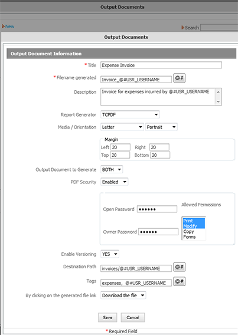
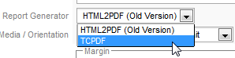
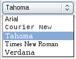
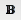
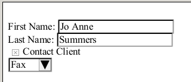
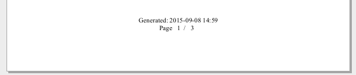
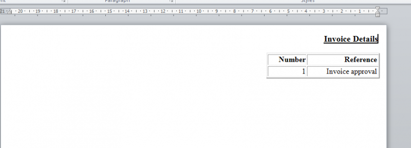
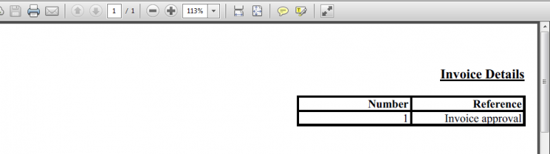
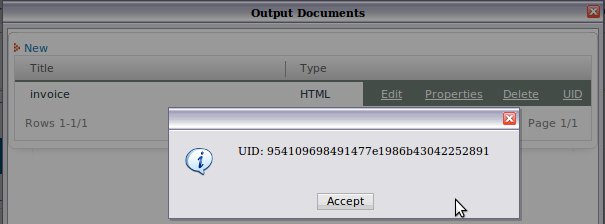

- Overview
- Creating Output Documents
- Creating Output Documents using TCPDF generator
- Editing Templates
- Output Document Example
- Editing the HTML Code
- Inserting Images
- Inserting form fields
- Inserting Variables inside Form Fields
- Inserting Page Breaks
- Page Headers and Footers
- Page Numbers and File Information
- Formatting documents to display content in RTL
- Grids in Output Documents
- Output Document Storage
- Accessing Output Documents through Triggers
- Linking to an Output Document in Emails
- Linking to multiple Output Documents in Templates
- Linking to an Output Document in a DynaForm
- Linking to multiple Output Documents in Grids
- Emailing the content of an Output Document
- Redirecting to Generated Output Document Files
- Errors with Output Documents
Overview
Output Documents are files generated while running a case, which are meant to be printed out or stored digitally outside ProcessMaker. Output Documents are useful for creating external records of case data, as well as creating formatted output such as bills, receipts, and letters. They are generated from HTML templates containing references to system and case variables, which are auto-inserted when the Output Document is generated as a step when running a case.
Output Documents are generated as PDF (Portable Document Format) and/or DOC (Word document) files, so they can be easily opened and printed using Adobe Acrobat and Microsoft Office (or alternatives such as Foxit Reader, Evince, Okular, WordPerfect, AbiWord and OpenOffice).
Output Documents which are generated as DOC files are actually HTML files which have the ".doc" extension added, so that MS Word and other text editors will open them. If needing to use them as HTML files, simply rename the file with a ".html" extension.
If the Output Document is generated as a PDF file, either the HTML2PDF or the TCPDF library can be used to generate the PDF file. HTML2PDF can be used if needing to insert some of the formatting options listed below such as page breaks and headers and footers. In most cases, it is recommended to use the TCPDF library which is available in version 2.5.0 and later and is compatible with more recent versions of PHP. TCPDF is recommended if generated PDFs which contains images or trying to minimize file size, because HTML2PDF generates compressed PDF documents, which omit extra parameters in the code, which means that the PDF file will be smaller in size.
Creating Output Documents
To create a new Output Document, first open a process. When inside the process map, go to DESIGNER > OUTPUT DOCUMENTS to open a list of Output Documents. Click on New to define a new Output Document:

Define the following fields for the Output Document:
- Title: A title to identify the Output Document.
- Filename generated: The name of the file to be created when the Output Document is generated while running cases. Note that paths cannot be included in the filename, since Output Documents are stored in a standard location in the file system. To include a system or case variable in the filename, click on the [@#] button and select a variable.
Note: It is recommended to only use
@#variablein filenames and not@@variablebecause the Windows operating system can't handle filenames that contain"(double quotation marks). - Description: A description about the Output Document, which should inform the user what is the general content or purpose of the document. To include a system or case variable in the filename, click on the [@#] button and select a variable.
- Report Generator: Choose the engine Output Documents will use to be generated. Use HTML2PDF if using versions earlier than 2.5, otherwise use TCPDF if using versions 2.5 or later.
- Orientation: Select whether the document is in a portrait (vertical) or landscape (horizontal) layout.
- Media: Select the paper size:
| Paper Type | Width | Height |
|---|---|---|
| Letter | 216 | 279 |
| Legal | 216 | 357 |
| Executive | 184 | 267 |
| B5 | 182 | 257 |
| Folio | 216 | 330 |
| A0Oversize | 882 | 1247 |
| A0 | 841 | 1189 |
| A1 | 594 | 841 |
| A2 | 420 | 594 |
| A3 | 297 | 420 |
| A4 | 210 | 297 |
| A5 | 148 | 210 |
| A6 | 105 | 148 |
| A7 | 74 | 105 |
| A8 | 52 | 74 |
| A9 | 37 | 52 |
| A10 | 26 | 37 |
| Screenshot640 | 640 | 480 |
| Screenshot800 | 800 | 600 |
| Screenshot1024 | 1024 | 768 |
- Left Margin: Size of the paper's left margin in mm.
- Right Margin: Size of the paper's right margin in mm.
- Top Margin: Size of the paper's top margin in mm.
- Bottom Margin: Size of the paper's bottom margin in mm.
- Output Document to Generate: Select whether the Output Document will be generated in DOC, PDF, or BOTH formats.
- PDF Security: A new option available in version 2.0.32 and later, which allows passwords to be set for the generated PDF document and restricts how it may be used. Select one of the following options:
- Disabled: Default. No security will be applied to the generated PDF document.
- Enabled: If selected, the following security options are displayed:
- Open Password: Define a password to open the PDF document.
- Owner Password: Define a password to change the PDF document's permissions.
- Allowed Permissions: Select how the PDF document may be used. To select more than one option, hold down on the CTRL key while clicking the following options:
- Print: The document can be printed.
- Modify: The document can be edited.
- Copy: The document can be copied.
- Forms: The fields in the document may be filled in.
- Enable Versioning: Check this option if needing to keep multiple versions of the Output Document. Versioning is useful if creating the same Output Document at multiple steps during a case. This option allows a record to be kept of how the document's data changes over the course of a case, which is useful for maintaining audit trails.
- Destination Path: Enter the name of the folder where this Output Document should be displayed. Click on the [@#] button to select a variable which will be used in the folder name. To specify a subfolder inside other folders, enter a path to that folder, separating each folder with a / (forward slash). For example: Invoices/@#USR_USERNAME/@#subject_@#date
To see a list of Input Documents, Output Documents and attached files found in each folder, go to CASES > Documents and click on the folder.
Note that the Destination Path does not effect where output documents are stored in the file system. Moreover, all files will be stored inside path where ProcessMaker has been installed, either a local computer or a Server. - Tags: Enter the name of the identifying tag(s), which will be associated with this Output Document. To specify more than one tag name, separate each tag name with commas. Click on the [@#] button to select a variable which will be used in the tag name. Tags result really useful when looking for Output Documents in the ProcessMaker database.
- By clicking on the generated file link: Select whether the file will be downloaded or opened in the same browser. (Hotfix 2.5.2.4)
- Download the file: Download the file directly in the local computer. By choosing this option the browser will select automatically the option to download the file.
- Open the file: Open the file in the same browser. By choosing this option the browser will select automatically the option to open the file.
After defining the new Output Document, click on Save.
Creating Output Documents using TCPDF generator
Available Version: From 2.5 on.
Usually when PDF Documents are generated with more than 6 pages, they can't be created and downloaded producing an error in the HTML code. To improve the generation of PDF documents, the TCPDF generator was included inside ProcessMaker to allow users the creation and generation of PDF and DOC documents without having issues with the amount of pages created.
This new generator supports UTF-8 Unicode and right-to-left languages. Also it has a backward compatibility with documents created on previous versions of ProcessMaker. If documents less than 6 pages needs to be created also is possible to use the HTML2PDF generator. Moreover, this generates compressed documents, without configuring some extra parameters into the code, this means that the PDF document generated will be smaller in size, this is a great enhancement specially if you generate documents with images in them.
When an Output Document is being created, the new generator can be chosen as the image below:

Editing Templates
| Check the new WYSIWYG Html Editor Available Version: 2.5 |
To edit the template for an Output Document, go to DESIGNER > OUTPUT DOCUMENTS to open a list of the Output Documents for the current process.

To edit its template, click on the Edit button for an Output Document. An HTML editor will open where the content of the Output Document can be easily edited.

Enter the desired text in the Output Document Template. Entering a hard return generates a new
paragraph code in the HTML, which inserts a blank line in the text. To enter a line break which doesn't insert a blank line in the text, press SHIFT + ENTER to insert a
tag. The editor supports the standard key combinations of CTL + c to copy, CTL + x to cut, and CTL + v to paste. Changes can be undone by pressing CTL + z. Multiple levels of undo are supported. After undoing changes with CTL + z, press CTL + y to redo the changes.
When done editing the Output Document template, click Save to store the changes and then click on the close icon to close the editing window.
Inserting Variables
Case variables and system variables can be inserted into the text of an Output Document:
@#FIELD-NAMEinserts the value of the variable without any changes.@@FIELD-NAMEinserts the value of the variable enclosed in "" (double quotation marks). Any quotation marks inside the value will be escaped with backslashes, such as"Don\'t say \"hello\"".
Note that the variable names are case sensitive, so @@MyVariable is not the same as @@myvariable.
If a variable does not exist when the Output Document is generated, then the name of the variable will be inserted into the text. This can be a problem if using case variables from DynaForm fields which the user isn't required to submit or if the variable is defined later in the process. To avoid this problem, change the Next Step Link property for DynaForms to "Save & Continue", so the fields will be automatically submitted and case variables will always be created. If the user should have a choice whether to submit a DynaForm or not, then fire a trigger before the Output Document which checks whether the variables have been created. If they haven't, then set them to empty strings:
Formatting Output Documents
ProcessMaker version 2.0 includes a new advanced WYSIWYG (what you see is what you get) editor to add formatting to Output Documents. The toolbar includes the following buttons:

The font for text can be changed by selecting the text and then choosing Arial, Courier New, Tahoma, Times New Roman, or Verdana.

Formatting buttons:
-  Bold: Set the selected text to bold (a heavier weight). Shortcut: ctl + b
- Italics: Set the selected text to italics (inclined text). Shortcut: ctl + i
- Underline: Underline the selected text. Shortcut: ctl + u
- Grow Text: Increase the font size of the selected text by one increment on a scale from 1 to 7.
- Shrink Text: Decrease the font size of the selected text by one increment on a scale from 1 to 7.
- Font Color: Change the color of the selected text.
 Text Highlight Color: Change the highlight (background) color behind the selected text.
Text Highlight Color: Change the highlight (background) color behind the selected text.- Left align: Align the selected text along the left-hand border.
 Center: Align the selected text in the center.
Center: Align the selected text in the center.- Right align: Align the selected text along the right-hand border.
- Link: Add a hyperlink to the selected text.
- Ordered List: Insert an ordered list, which begins counting from 1.
 Unordered List: Insert an unordered list, which uses bullet points instead of numbers.
Unordered List: Insert an unordered list, which uses bullet points instead of numbers. Edit Source: Edit the HTML code for the template. See Editing the HTML Code.
Edit Source: Edit the HTML code for the template. See Editing the HTML Code.
Be careful to not insert HTML formatting tags inside a variable name, because it will cause the variable to not be recognized by ProcessMaker. For example, if bold tags are inserted inside the variable @#USR_USERNAME, it becomes @#US<b>R_USER</b>NAME. Since, ProcessMaker can't find find the variable @#US, it will print the variable name in the generated Output Document.
Output Document Example
Here is a sample Output Document template for an “Approval Letter” which is used in the Credit Card Application process. In this example, the several case variables are inserted into the form letter which is sent to applicants who have been approved to receive a credit card:
Editing the HTML Code
For more control over the formatting of a template and the use of more advanced types of HTML elements such as images or tables, the HTML code can be directly edited by clicking on the  button on the toolbar. When done editing the HTML code, click on the
button on the toolbar. When done editing the HTML code, click on the  button again to return to normal WYSIWYG editing.
button again to return to normal WYSIWYG editing.
Inserting Images
To insert an image in an Output Document, first upload the image file to the "public" directory in the ProcessMaker server with the Process Files Manager (or another publicly accessible location). Then, go to ADMIN > Settings > Web Services Test and use the processList() web service to find out the unique ID for the current process. Then edit the HTML code for the Output Document and add the line:
- <img src="http://<IP-ADDRESS>:<PORT>/sys<WORKSPACE>/<LANGUAGE>/<SKIN>/<PROCESS-UID>/<FILENAME>">
For example, the file "companyLogo.png" in the process "40825258848d67d3d5d1d52083561715":
- <img src="http://www.example.com/sysworkflow/en/classic/40825258848d67d3d5d1d52083561715/companyLogo.png">
Inserting form fields
To insert form fields inside of an Output Document, edit the HTML code and create an HTML <form>. In that <form>, add <input>, <select>, and/or <submit> fields.
For example, this template code:
First Name: <input type="text" name="MyText1" size="20" value="Jo Anne"><br>
Last Name: <input type="text" name="MyText2" size="20" value="Summers"><br>
<input type="checkbox" name="MyCheckbox" value="contact" checked>Contact Client<br>
<select name="MyDropdown">
<option value="telephone">Telephone</option>
<option value="fax" selected>Fax</option>
<option value="email">Email</option>
</select><br>
</form>
Creates this Output Document:

Note that these form fields are not interactive, so the content of the fields can not be edited.
Inserting Variables inside Form Fields
System variables and case variables can be inserted inside form fields. For example, to insert the @#USR_USERNAME system variable in a field named "username" and the @#CaseStarted in a field named "timeStarted":
Warning: If inserting inside an <input> field, only reference variables as @#variable-name. Do NOT use @@variable-name, because it will insert a set of double quotation marks inside a set of double quotations marks, which will mess up the HTML tag.
For example, this bad template code:
will generate erroneous HTML code like:
Checkboxes in Output Documents
In an Output Document, a checkbox is marked if it has the checked property defined in its HTML code.
This checkbox is marked:
This one is not marked because there is no checked property:
In order to use a case variable to mark a checkbox in an output document, insert place the case variable in the HTML code like this:
If the value of @#CheckContactClient is "checked" then the checkbox will be marked. If it is "" (empty string), then it won't be marked in the Output Document.
Create a trigger which will set the value of @@CheckContactClient to "checked" or "", depending upon the value of a checkbox in a DynaForm. Set this trigger to fire before the step which generates the Output Document.
For example, if the name of the checkbox field in the DynaForm is "ContactClient", then use this PHP code to check whether the checkbox is marked in order to set the value of @@MarkContactClient.
@@CheckContactClient = "checked";
}
else {
@@CheckContactClient = "";
}
Note: By default checkbox case variables have a value of "On" when marked and "Off" when not marked, but these values can be set in the checkbox properties.
Checkgroups in Output Documents
A checkgroup can be created in HTML as a collection of individual checkboxes, so create as many checkboxes in the Output Document as there are options in the checkgroup.
For example, a checkgroup is named "HowContact", with 3 options whose values are "fax", "telephone" and "email". To create this checkgroup in an Output Document, add these three checkboxes to the Output Document's HTML code:
Then create a trigger which fires before the Output Document to set the value of the @@CheckFax, @@CheckTelephone and @@CheckEmail variables, so they can later be inserted in the generated Output Document. The selected options in a checkgroup are stored in a case variable which separates each selected value with | (pipes). Use explode() to break it into an array and in_array() to check if the value is in the array.
For example:
if (in_array("fax", $aSelected))
@@CheckFax = "checked";
else
@@CheckFax = "";
if (in_array("telephone", $aSelected))
@@CheckTelephone = "checked";
else
@@CheckTelephone = "";
if (in_array("email", $aSelected))
@@CheckEmail = "checked";
else
@@CheckEmail = "";
Inserting Page Breaks
To insert a page break in both DOC and PDF files, edit the HTML code for the Output Document and define a style which causes a page break before an HTML element. Then apply that style to an HTML element such as a line break or a paragraph.
For example:
To insert a page break which will only appear in PDF files which are generated using the HTML2PDF library, edit the HTML code of the Output Document and add the HTML comment: <!--NewPage-->
For example:
<!--NewPage-->
This is page 2.
Output Documents do not have a property to add page headers and footer, but these can be added manually if using the HTML2PDF library to generate PDF files. To define a page header in an Output Document, edit the HTML code and add text between <!--header starts--> and <!--header ends--> tags. Note that these are custom comment tags used by HTML2PDF and these codes will be ignored in the DOC files and PDF files created with TCPDF.
For example:
To avoid the header being placed on top of content inside the Output Document, set the header above the content with a style setting such as top: -5mm;. However, make sure that the top margin of the Output Document is set to 5mm or larger.
To insert a page footer, edit the HTML code of the Output Document and add text between <!--footer starts--> and <!--footer ends--> tags. For example:
To avoid the footer being placed on top of content inside the Output Document, set the footer below the content with a style setting such as bottom: 5mm;. However, make sure that the bottom margin of the Output Document is set to 5mm or larger.
Note: The footer and header comments only work if using the HTML2PDF engine to generate the Output Document.
Page Numbers and File Information
If generating PDF files using the HTML2PDF library, it is possible to insert page numbers and file information in the generated Output Document, using the following directives:
| Directive | Description |
|---|---|
| ##PAGE## | Number of the current page. |
| ##PAGES## | Total number of pages in the generated PDF file. |
| ##FILENAME## | The URL where the source HTML is located, such as: http://example.com/files/98534779755ef0116e951f8051419251/outdocs/83393260655ef0978d76fd0041065478_2.html. This location cannot be used externally. It either has to be converted into a URL such as: http://example.com/sysworkflow/en/neoclassic/cases/cases_ShowOutputDocument?a=83393260655ef0978d76fd0041065478&v=4&ext=html Or a file location of the server, such as: /opt/processmaker/shared/sites/workflow/files/985/347/797/55ef0116e951f8051419251/outdocs/83393260655ef0978d76fd0041065478_4.html |
| ##FILESIZE## | The size of the HTML source file in bytes. |
| ##TIMESTAMP## | The time when the Output Document was generated in "YYYY-MM-DD HH:MM" format. |
For example the following code prints out the page number and the total pages in the footer of each page:
<html>
<head>
</head>
<body>
<p></p>
<!--footer starts-->
<div style="position: fixed; bottom: 5mm; width: 100%;"><center>Generated: ##TIMESTAMP##<br />Page ##PAGE## / ##PAGES##</center></div>
<!--footer ends-->
<p>This is the first page</p>
<!--NewPage-->
<p>This is the second page</p>
<!--NewPage-->
<p>This is the third page</p>
</body>
</html>
At the bottom of each page will appear, the footer text will appear:
Formatting documents to display content in RTL
Available Version: From 2.0.44 on
The RTL skin is available in version 2.0.44 and later, which allows ProcessMaker to display correctly right-to-left languages such as Arabic and Hebrew. It is also possible to display the contents of Output Documents in right-to-left.
For content inside paragraphs, add dir="RTL" to the <p> tags:
For content inside tables, add dir="RTL" to the <table> tags:
For example the following Output Document template displays a table in right-to-left:
The resulting Output Document will be generated as:
.doc document

.pdf document

Grids in Output Documents
The fields from a grid can also be inserted into Output Documents by editing the HTML code. They need to be enclosed inside open and closing tags for the grid. Use the tag @>GRID-NAME to open the grid and @<GRID-NAME to close the grid, where GRID-NAME is the name of a grid object in a master DynaForm. (Do NOT use the name of the separate grid form--only use the field name of the grid object found inside of a master form.) The GRID-NAME can also be an associative array of associative arrays. This array can be a case variable manually defined in a trigger or the value returned by querying a database with executeQuery(). Between these tags, include the variables for the fields in that grid:
Before version 2.5.0:
In version 2.5.0 and later, a new HTML editor has been introduced, which makes it difficult to insert < and >, so the opening and closing tags for the grid have to be enclosed inside HTML comment tags <!-- ... -->, like this:
The fields enclosed in the opening and closing grid tags will be repeated as many times as there are rows in the grid.
For example, if designing a travel expenses report, the following Output Document would list each of the expenses in a grid named "EXPENSE_GRID" which has fields named "DATE", "TYPE", "DESCRIPTION", and "AMOUNT":
Before version 2.5.0:
In version 2.5.0 and later:
Remember that grid names and field names are case sensitive, so they must be spelled exactly as they were defined.
The EXPENSE_GRID could come from a grid DynaForm which has fields named "DATE", "TYPE", "DESCRIPTION" and "AMOUNT". However, it could also be generated by using executeQuery() to query a PM Table, Report Table or an external database. If the database has different field names than those in the Output Document, use "AS" to rename the fields. For example, a trigger containing the following code could be fired before the above Output Document is generated:
$query = 'SELECT EXP_DATE AS DATE, EXP_TYPE AS TYPE, EXP_DESC AS DESCRIPTION, EXP_AMT AS AMOUNT FROM EXPENSES';
@@EXPENSE_GRID = executeQuery($query, $db);
Likewise, the trigger could manually create EXPENSE_GRID as an associative array of associative arrays:
'1' => array('DATE'=>'2010-04-25', 'TYPE'=>'Airfare', 'DESCRIPTION'=>'Flight to Paris', 'AMOUNT'=>1295.35),
'2' => array('DATE'=>'2010-04-26', 'TYPE'=>'Lodging', 'DESCRIPTION'=>'Sheraton Hotel', 'AMOUNT'=>300.00 ),
'3' => array('DATE'=>'2010-04-27', 'TYPE'=>'Meals', 'DESCRIPTION'=>'Lunch w/ client', 'AMOUNT'=>104.95 )
);
Grids with a Fixed-Width Font
The default font for Output Documents is Arial, which is a variable-width font. It is hard to create neat columns of data with a variable-width font. Therefore, it is recommended to edit the HTML code and set the grid fields inside <pre>...</pre> tags or <tt>...</tt> tags, so the columns of data will line up in a fixed-width font.
For example:
Before version 2.5.0:
In version 2.5.0 and later:
Grids inside an HTML Table
For even better formatting of grid data, edit the HTML code and set the the grid inside an HTML table.
Here is an example of the same grid fields inside an HTML table:
Before version 2.5.0:
Travel Expense Report<br>
@#FIRST_NAME @#LAST_NAME<br>
@#REPORT_MONTH
</center>
<br>
<table><tbody>
<tr>
<th>Date</th><th>Type Of expense</th><th>Description</th><th>Amount</th>
</tr>
@>EXPENSE_GRID
<tr>
<td>@#DATE</td><td>@#TYPE</td><td>@#DESCRIPTION</td><td>@#AMOUNT</td>
</tr>
@<EXPENSE_GRID
</tbody></table>
In version 2.5.0 and later:
Travel Expense Report<br>
@#FIRST_NAME @#LAST_NAME<br>
@#REPORT_MONTH
</center>
<br>
<table><tbody>
<tr>
<th>Date</th><th>Type Of expense</th><th>Description</th><th>Amount</th>
</tr>
<!--@>EXPENSE_GRID-->
<tr>
<td>@#DATE</td><td>@#TYPE</td><td>@#DESCRIPTION</td><td>@#AMOUNT</td>
</tr>
<!--@<EXPENSE_GRID-->
</tbody></table>
Output Document Storage
Output Document Definitions
The definitions of Output Documents are stored in the wf_<WORKSPACE>.OUTPUT_DOCUMENT table in the MySQL database. This table, however, doesn't contain the title, description, template and filename for Output Documents, because this information can be multilingual with a different version for each language. Instead, this information is stored in the wf_<WORKSPACE>.CONTENT table under different ISO 639-1 language codes, such as "en" for English or "es" for Spanish.
To find the title, description, template and filename for Output Documents, enter MySQL (either from the command line or with graphical program such as phpMyAdmin) or access it through a function such as executeQuery() in a trigger. Search for a value of 'OUT_DOC_TITLE', 'OUT_DOC_DESCRIPTION', 'OUT_DOC_TEMPLATE', and 'OUT_DOC_FILENAME' in the wf_<WORKSPACE>.OUTPUT_DOCUMENT.CON_CATEGORY field. For example, to find all Output Document templates:
To find a specific Output Document template, specify its unique ID in the query:
Use the following SQL query to see all the entries related to Output Documents:
To see the information about a particular Output Document definition, search for its unique ID, which can either be found in the field wf_<WORKSPACE>.OUTPUT_DOCUMENT.OUT_DOC_UID or by opening the list of Output Documents inside ProcessMaker and clicking the UID link for an Output Document. Once the unique ID is known, it can be used in a SQL query:
For example, here is an Output Document defined in both English and Spanish:
Note that a multilingual Output Document like this can be created by first logging into ProcessMaker in English and creating the Output Document, then logging into ProcessMaker in Spanish and editing the same output document in Spanish.
Output Document Files
When Output Document files are generated while running a case, an HTML file is created based upon the Output Document's template. From that HTML file, a PDF and/or DOC file are created. (Actually the DOC file is really just HTML code inside a DOC container.)
Output Documents files are stored at:
The filename of output documents files includes the unique ID for the case file (which is stored in the wf_<WORKFLOW>.APP_DOCUMENT.APP_DOC_UID field) and the version number, which starts counting from 1. Even if versioning isn't enabled, the filename will include "_1".
Linux/UNIX:
Note: The TCPDF library doesn't generate a separate HTML file.
For example:
Windows:
For example in Windows Vista and later:
In version 2.5.1 and later, an option was added to allow case files to be stored in a series of 3 subdirectories
created from the case's unique ID to avoid the 32K file limits of Linux's ext3 file system. In version 3.0 and later, this option is activated by default. This means that a directory using the case's unique ID, such as /a03459e1cb9824dac456780eca7b5cf6/ in the above example, becomes 3 subdirectories whose names are three characters in the case's unique ID, with the rest of the unique ID placed in the name of another subdirectory:
If accessing an Output Document file in a ProcessMaker trigger or plugin, the it is recommended to use the defined constants PATH_DOCUMENT, which is set the location of the case files, such as "/opt/processmaker/shared/sites/workflow/files/" on a Linux/UNIX system, and PATH_SEP, which is "/" on Linux/UNIX systems and "\" on Windows systems to separate directories in the file system. The G::getPathFromUID() method may be used in version 2.5.1 or later to break a unique ID number into subdirectories in this way if the system requires it. For example to get an Output Document file with the case-file ID of 6960198894e6927e0a40b14004833875 and the version number 2 in the current case:
$OutDocPath = PATH_DOCUMENT . $g->getPathFromUID(@@APPLICATION) . PATH_SEP . "outdocs" . PATH_SEP . "6960198894e6927e0a40b14004833875_2.pdf";
G::getPathFromUID() exists before calling it.
$g = new G();
$caseIdPath = method_exists(G, "getPathFromUID") ? $g->getPathFromUID($caseId) : $caseId;
$OutDocPath = PATH_DOCUMENT . $caseIdPath . PATH_SEP . "outdocs" . PATH_SEP . "6960198894e6927e0a40b14004833875_2.pdf";
Changing the File Location
If needing to store Input and Output Document files in a different location, such as a NAS, then copy the contents of the files directory to the new location and then edit the source code in workflow/public_html/sysGeneric.php and change the locate of PATH_DOCUMENT, which is defined at line 332:
For example, to store files at a NAS mounted drive at /media/nas/processmaker:
Make sure to include the forward slash in Linux/UNIX or the backward slash in Windows at the end of the path.
Generated Output Documents in the Database
When an Output Document is generated when running a case, a new entry is added to the wf_<WORKSPACE>.APP_DOCUMENT table and new unique ID is assigned to the generated Output Document. In addition 3 new entries are added to the wf_<WORKSPACE>.CONTENT table whose CON_ID field is set to that unique ID and the CON_CATEGORY fields are set to 'APP_DOC_TITLE','APP_DOC_FILENAME' and 'APP_DOC_COMMENT', respectively.
If inside a trigger or using an external application or script, the unique ID for an Output Document file can be found with the outputDocumentList() web service. Inside a trigger or a DynaForm, the unique IDs for all generated Output Documents can be looked up with the following SQL query:
To find the generated Output Documents for a specified case:
APP_DOC_TYPE='OUTPUT' AND APP_DOC_STATUS='ACTIVE'
To find a specified Output Document for a specified case, which was uploaded by a specified user:
DOC_UID='<INPUT_DOC_UID>' AND USR_UID='<USER_UID>' AND
APP_DOC_TYPE='INPUT' AND APP_DOC_STATUS='ACTIVE'
Output Documents can be marked by tags, which provide an easy way to find related Output Documents under HOME > Documents. The tags are stored in the wf_<WORKSPACE>.APP_DOCUMENT.APP_DOC_TAGS field for each generated Output Document file and multiple tags are separated by commas. To find all generated Output Document files for a case with a specified tag:
APP_DOC_STATUS='ACTIVE' AND APP_DOC_TAGS LIKE '%<TAG>%'
To find all generated Output Documents created between a certain date range:
APP_DOC_CREATE_DATE>='<YYYY-MM-DD HH:MM:SS>' AND APP_DOC_CREATE_DATE<='<YYYY-MM-DD HH:MM:SS>'
To find the unique IDs for all the generated files for a specified Output Document Definition and their filenames used under HOME > Documents (not its real filename in the file system), query the wf_<WORKSPACE>.CONTENT table:
WHERE AD.DOC_UID='<OUT-DOC-DEFINITION-UID>' AND AD.APP_DOC_STATUS='ACTIVE' AND
AD.APP_DOC_UID=C.CON_ID AND C.CON_CATEGORY='APP_DOC_FILENAME' AND C.CON_VALUE<>''
To find the unique IDs for all the generated Output Documents for a specified user and their filenames used under HOME > Documents:
WHERE AD.USR_UID='<USER-UID>' AND AD.APP_DOC_TYPE='OUTPUT' AND AD.APP_DOC_STATUS='ACTIVE' AND
AD.APP_DOC_UID=C.CON_ID AND C.CON_CATEGORY='APP_DOC_FILENAME' AND C.CON_VALUE=''
To find the unique IDs for all the generated Output Documents for a specified case and their filenames used under HOME > Documents:
WHERE AD.APP_UID='<CASE-UID>' AND AD.APP_DOC_TYPE='OUTPUT' AND AD.APP_DOC_STATUS='ACTIVE' AND
AD.APP_DOC_UID=C.CON_ID AND C.CON_CATEGORY='APP_DOC_FILENAME' AND C.CON_VALUE<>''
If multi-lingual processes have been designed and the filename depends upon the system language, then add ADD C.CON_LANG='<LANG-CODE>' to the 3 queries above.
If the Output Document is configured to allow multiple versions of the same Input Document file, then also look for the record with the highest positive integer in the wf_<WORKSPACE>.APP_DOCUMENT.DOC_VERSION field. (The counting starts from the number 1.)
To find the most recent version of a generated Output Document for a specified case:
DOC_UID='<OUT-DOC-DEFINITION-UID>' AND APP_DOC_STATUS='ACTIVE' AND
DOC_VERSION = (SELECT MAX(DOC_VERSION) FROM APP_DOCUMENT WHERE APP_UID='<CASE-UID>' AND
DOC_UID='<OUT-DOC-DEFINITION-UID>' AND APP_DOC_STATUS='ACTIVE')
Accessing Output Documents through Triggers
To examine the definition for an Output Document in a trigger, the Unique ID (UID) for the Output Document needs to be looked up. The UID can be found by looking it up in the wf_<WORKSPACE>.OUTPUT_DOCUMENT.OUT_DOC_UID field in the database, or by opening a process for editing. In the list of Output Documents, there is a UID button for each Output Document which shows its unique ID number.

To open the Output Document generated for a particular case, it is necessary to know the UID for the case, in order to know where to find the Output Document stored in the file system. Either use the @@APPLICATION system variable for the UID of the current case or lookup the case UID in the wf_<WORKSPACE>.APPLICATION.APP_UID field. Once the file location is known, then use the file() or file_get_contents() to read the contents of a Output Document file in HTML or DOC format. Note that the generated DOC file is really just an HTML file with a ".doc" extension, so it can be read as a normal text file.
If trying to construct a link to an Output Document for a particular case, lookup the UID for the generated Output Document in the wf_<WORKSPACE>.APP_DOCUMENT.APP_DOC_UID field. This UID can be found by searching for the UID of the case and the UID for the Output Document definition in the APP_DOCUMENT table.
Linking to an Output Document in Emails
In order to send out an email with a link to an Output Document for a particular case, first create a new email template by opening the process to edit it. Then, right click on the process map and select the option Process Files Manager from the dropdown menu. Enter the mailTemplates directory and click on the New link to create an email template named "opendoc.html". Then edit it to have the following content:
Replace IP-ADDRESS with the address of the server running ProcessMaker. If the output document is in DOC format, rather than a PDF, then replace ext=pdf with ext=doc.
If the user does not have an open login session for ProcessMaker, then ProcessMaker will redirect to a login screen before directing to the Output Document file. In order to access the Output Document file, the user must be assigned Process Permissions to access the Output Document or must be the currently designated user to work on a task which has the Output Document as a step.
The system variables @#SYS_SYS, @#SYS_LANG, and @#SYS_SKIN are already defined, but a trigger will have to be created to look up the UID for a specific Output Document for a case and assign it to the case variable @#appDocUid in the email template. Then, send out the email with PMFSendMessage():
$caseId = @@APPLICATION;
$result = executeQuery("SELECT * FROM APP_DOCUMENT WHERE APP_UID='$caseId' AND DOC_UID='$docId'");
if (is_array($result) and count($result) > 0) {
@@appDocUid = $result[1]['APP_DOC_UID'];
PMFSendMessage(@@APPLICATION, 'supervisor@example.com', 'employee@example.com',
'', '', 'Open Output Document for your case', 'opendoc.html');
}
else {
die("Error: Unable to find Output Document for Case.");
}
If only the title of the Output Document is known, but not its unique ID, then the UID of the Output Document definition can be looked up in the MySQL database. For instance if the title of the Output Document is "Invoice", then look up that title in the wf_<WORKSPACE>.CONTENT table.
Replace the line:
With the code:
$outDocTitle = "Invoice";
$query = "select OD.OUT_DOC_UID from OUTPUT_DOCUMENT OD, CONTENT C where " .
"OD.OUT_DOC_UID=C.CON_ID and C.CON_CATEGORY='OUT_DOC_TITLE' and C.CON_VALUE='$outDocTitle'";
$result = executeQuery($query);
if (!is_array($result) or count($result) < 1)
die("Error: Unable to find output document '$outDocTitle' in database!");
else
$docId = $result[1]['OUT_DOC_UID'];
Linking to multiple Output Documents in Templates
Inserting links to multiple Outputs Documents files in an email notifications and Output Documents involves creating a template which contains a grid. Grids fields should be enclosed inside @>grid-name ... @<grid-name tags and will be repeated for as many records as are found in the grid. For more information, see Grids in Output_documents.
For example, the following template is used to print a table of Output Documents:
The following trigger is fired before the Output Document is generated to populate the @=OutputDocList array used in the template. It uses executeQuery() to lookup the unique IDs, creation dates, users and filenames for the generated Output Document files generated for the current case. executeQuery() returns an associative array of associative arrays which is the same format as used by grids. Then, the trigger loops through the records in that associative array and looks up the unique ID, title, creation date, and filename for each generated Output Document in the APP_DOCUMENT and CONTENT tables. It also uses the unique ID to construct the links to the PDF and DOC for each Output Document and inserts that information into the @=InputDocList array:
//Look up the case title:
$caseInfo = executeQuery("SELECT APP_TITLE FROM APPLICATION WHERE APP_UID='$caseId'");
@@CaseTitle = $caseInfo[1]['APP_TITLE'];
@=OutputDocList = array();
$query = "SELECT C.CON_ID AS uid, AD.APP_DOC_CREATE_DATE AS dateCreated, C.CON_VALUE AS filename,
FROM APP_DOCUMENT AD, CONTENT C
WHERE AD.APP_UID='$caseId' AND AD.APP_DOC_TYPE='OUTPUT' AND AD.APP_DOC_STATUS='ACTIVE'
AND AD.APP_DOC_UID=C.CON_ID AND C.CON_CATEGORY='APP_DOC_FILENAME' AND C.CON_VALUE<>''";
$docs = executeQuery($query);
if (is_array($docs) and count($docs) > 0) {
for ($i = 1; $i <= count($docs); $i++) {
//Create links to the generated Output Document's PDF and DOC:
$url = 'http://' . $_SERVER['HTTP_HOST'] . '/sys' . @@SYS_SYS . '/' . @@SYS_LANG . '/' .
@@SYS_SKIN . '/cases/cases_ShowOutputDocument?a=' . $docs[$i]['uid'] . '&ext=';
$docs[$i]['pdfLink'] = $url . 'pdf';
$docs[$i]['docLink'] = $url . 'doc';
//lookup the title for the generated Output Document:
$titleQuery = executeQuery("SELECT CON_VALUE FROM CONTENT WHERE CON_ID='" . $docs[$i]['uid'] .
"' AND CON_CATEGORY='APP_DOC_TITLE'");
if (is_array($titleQuery) and count($titleQuery) > 0)
$docs[$i]['title'] = $titleQuery[1]['CON_VALUE'];
else
$docs[$i]['title'] = '';
}
@=OutputDocList = $docs;
}
Linking to an Output Document in a DynaForm
In order to include a link to an Output Document in a DynaForm, first create a DynaForm with a link field named "OutDocLink" and two hidden fields named "OutDocURL" and "OutDocLabel". Add the following JavaScript code to the DynaForm, to set the URL and label for the link when the DynaForm is first displayed.
getField("OutDocLink").innerHTML = getField("OutDocLabel").value;
If the Output Document should be opened in a separate window, add the code:
Then, create a trigger with the following code to lookup the address to the Output Document and set the URL and label for the link field:
$caseId = @@APPLICATION;
$result = executeQuery("SELECT * FROM APP_DOCUMENT WHERE APP_UID='$caseId' AND DOC_UID='$docId' ORDER BY DOC_VERSION DESC");
if (is_array($result) and count($result) > 0) {
$docId = $result[1]['APP_DOC_UID'];
@@OutDocURL = "../cases/cases_ShowOutputDocument?a=$docId&ext=pdf";
@@OutDocLabel = 'Open Output Document';
}
else {
die("Error: Unable to find Output Document for Case.");
}
Linking to multiple Output Documents in Grids
The previous example works well, when the number of generated Output Documents is known beforehand. However, if the number of generated Output Documents is not known beforehand, it is best to display a list of links inside a DynaForm grid. For example, if displaying links to all versions of an Output Document or displaying all the available Output Documents for a case, user, group, department, process, etc.
In order to populate the grid, fire a trigger which queries the wf_<WORKSPACE>.CONTENT and wf_<WORKSPACE>.APP_DOCUMENT tables to find the unique IDs of the generated Output Documents and their filenames (and any other information like their creation date and the user who created them). Since it is not possible to set the labels and URLs of links in a grid, all the links in the grid can be passed inside a JSON string to a hidden field in the DynaForm and then JavaScript can be used to decode the JSON string and set all the links in the grid.
For example, the following trigger is used look up all the Output Documents generated by the current user. The trigger will populate a grid named "DocumentListGrid" with fields named "caseNo", "filename", "dateCreated", and link fields named "pdfUrl" and "docUrl". The trigger creates a JSON string to hold the URLs to the Input Document files, which will be passed to a hidden field named "urlList".
$query = "SELECT A.APP_NUMBER AS caseNo, C.CON_VALUE AS filename, AD.APP_DOC_CREATE_DATE AS dateCreated,
AD.APP_DOC_UID AS docId FROM APP_DOCUMENT AD, APPLICATION A, CONTENT C
WHERE AD.USR_UID='$userId' AND AD.APP_DOC_TYPE='OUTPUT' AND AD.APP_DOC_STATUS='ACTIVE' AND
AD.APP_DOC_UID=C.CON_ID AND C.CON_CATEGORY='APP_DOC_FILENAME' AND C.CON_VALUE<>'' AND AD.APP_UID=A.APP_UID";
$result = executeQuery($query);
if (is_array($result) and count($result) > 0) {
@@DocumentListGrid = $result;
@@urlList = json_encode($result);
}
Create a hidden field in the master DynaForm named "urlList". Then, the following JavaScript code is used in the DynaForm to set the href property of each "docURL" and "pdfUrl" grid field in "DocumentListGrid" when the DynaForm is displayed. The eval() function is used to convert the JSON string into an object. Note that json_encode() in the trigger above converts $result from an associative array of associative arrays into an object, so the JavaScript will have to access it as an object.
for (var rowNo in urlListDecoded) {
//if version numbers are needed, add "&v=X" to the following URLs:
getGridField('DocumentListGrid', rowNo, 'pdfUrl').href = "../cases/cases_ShowOutputDocument?a=" +
urlListDecoded[rowNo]["docId"] + "&ext=pdf";
getGridField('DocumentListGrid', rowNo, 'docUrl').href = "../cases/cases_ShowOutputDocument?a=" +
urlListDecoded[rowNo]["docId"] + "&ext=doc";
getGridField('DocumentListGrid', rowNo, 'pdfUrl').target = '_blank'; //to open in separate page
getGridField('DocumentListGrid', rowNo, 'docUrl').target = '_blank'; //to open in separate page
}
Emailing the content of an Output Document
This example sends the contents of an Output Document file in an email. Output Document files are generated in HTML format, so its HTML code can be extracted from the file and inserted into an email, as long as the recipient's email client supports HTML. If the recipient's email client doesn't support HTML, then use strip_tags() and html_entity_decode() to convert the contents to plain text.
First, open the process and right click on the process map and select the option Process File Manager from the dropdown menu. Go to the mailTemplates directory and create an email template with an inserted variable named @#Contents which will hold the contents of Output Document:
Then, create a trigger to lookup the path and filename of the generated Output Document and get its contents with the file_get_contents() function. Then, pass those contents as a variable to be inserted in the email template. Note that variables can be passed as key-value pairs in an associative array, which is the last parameter for the PMFSendMessage() function.
$outDocId = 'XXXXXXXXXXXXXXXXXXXXXXXXXXXXXX'; //replace with the Output Document definition ID
$query = "SELECT APP_DOC_UID, DOC_VERSION AS VERSION FROM APP_DOCUMENT WHERE APP_UID = '$caseId'
AND DOC_UID = '$outDocId' ORDER BY DOC_VERSION DESC";
$result = executeQuery($query);
if (is_array($result) and count ($result) > 0) {
$g = new G();
$caseIdPath = method_exists(G, "getPathFromUID") ? $g->getPathFromUID($caseId) : $caseId;
$path = PATH_DOCUMENT . $caseIdPath . PATH_SEP . "outdocs" . PATH_SEP .
$result[1]['APP_DOC_UID'] . '_' .$result[1]['VERSION'] . '.html';
$contents = file_get_contents($path);
if (!$contents)
$g = new G();
$g->SendMessageText("Unable to open file '$path'!", 'ERROR');
else
PMFSendMessage(@@APPLICATION, 'from@example.com', 'to@example.com', '', '',
'Output Document for case', 'MyOutputDocument.html', array('Contents'=>$contents));
}
else
$g = new G();
$g->SendMessageText("Unable to find Output Document in database.\nQuery:\n$query", 'ERROR');
Redirecting to Generated Output Document Files
The web browser can be redirected to open a generated Output Document file. If the web browser is configured to open DOC or PDF files with a plugin, then the document will appear directly in the web browser, otherwise, the file will be downloaded to the user's local computer.
From inside a trigger, the web browser can be redirected with the G::header() function, followed by the die() function to stop the next step in the task from occurring. For example, to open the DOC file of a generated Output Document which has the unique ID "4164671654e67abad23a070019778021":
The G::header() function, however, redirects the location of the current frame. To open in a separate window, write JavaScript code which calls the window.open() method. Unlike the G::header() function which accepts relative addresses, the complete address needs to be constructed using ProcessMaker system variables and PHP's $_SERVER superglobal array. For example:
echo "<script type=\"text/javascript\"> window.open('http://{$_SERVER['SERVER_ADDR']}:{$_SERVER['SERVER_PORT']}/sys" .
@@SYS_SYS . '/' . @@SYS_LANG . '/' . @@SYS_SKIN . "/cases/cases_ShowOutputDocument?a=$docId&ext=doc'); </script>";
To lookup the unique ID of a generated Output Document for the current case, the following trigger could be used:
$caseId = @@APPLICATION;
$qry = "SELECT * FROM APP_DOCUMENT WHERE APP_UID='$caseId' AND DOC_UID='$docId' AND APP_DOC_STATUS='ACTIVE'";
$result = executeQuery($qry);
if (is_array($result) and count($result) > 0)
$docId = $result[1]['APP_DOC_UID'];
else
die("Error: Unable to find Output Document for Case.");
G::header("location: cases_ShowOutputDocument?a=$docId&ext=doc");
die();
If needing to route the case to the next task in the process (or finish the case if the last task), then call the PMFDerivateCase() function before G::header():
Errors with Output Documents
Error while generating PDF Documents
PHP version 5.4.0 or less must be installed if using the HTML2PDF library to generate PDF documents. Otherwise, a blank page will be generated. If a later version of PHP is installed, use the TCPDF library to generate Output Documents.
Variables are not inserted
If variables are not inserted into an Output Document, then either:
- The variable name was not spelled correctly. Remember that system and case variable names are case sensitive. Recheck the spelling by looking at the field name in the DynaForm or the variable name in the Trigger where it was defined.
- The case variable doesn't exist when the Output Document was created. If an Output Document references fields from a DynaForm which is used later in the process, then the case variable doesn't yet exist. Also, remember that case variables for each field in a DynaForm are only created when the DynaForm is submitted. If the user clicks on the Next Step link in a DynaForm whose Next Step Link property is set to "No Save & Continue", then none of the data in the DynaForm will be saved.
In order to determine what is the problem, run a case with the Trigger Debugger turned on and check whether the variables exist and what values they contain.
Output Document is empty
If an Output Document is generated which is empty, then there probably wasn't enough session memory to properly generate the document. Large output documents may need more than 80MB of session memory. Try increasing PHP's memory_limit setting.
Error in html2pdf
ProcessMaker uses html2pdf to generate Output Documents in PDF format. If an error message appears about a class in html2pdf saying "out of memory", then the pcre.backtrack_limit setting probably needs to be increased to allow for bigger style definitions, larger template files and deeper levels of nested tables/divs. pcre.backtrack_limit is a new setting introduced in PHP 5.2.0. If using an older version of PHP, upgrade to a newer version which supports the setting.
Edit php.ini, which is the PHP configuration file on the server running ProcessMaker, and add/modify the following line to increase the backtrack_limit:
Then, restart Apache for the new setting to take effect.